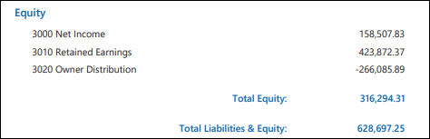
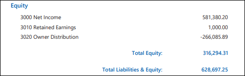

Source: https://rmxhelp.rentmanager.com/Topics/Express/KB/Retained-Earnings-Set-Up.htm
Configure Retained Earnings Settings
In traditional bookkeeping at the end of each year, income and expense accounts are zeroed out so the next year's Profit & Loss has a fresh start. The balances of the accounts are moved into a Balance Sheet account called Retained Earnings. Over time, this account represents all prior years' earnings and losses combined.
To handle retained earnings in Rent Manager, there are two things that must be done. First, you must establish which general ledger accounts in your Chart of Accounts will be used to track net income and retained earnings on the Balance Sheet. Second, you must choose whether you want Rent Manager to automatically roll net income into retained earnings at the end of each calendar year for reporting purposes or wait for this transfer to be handled manually by a user (typically an accountant by way of a journal entry).
Related Privileges
| Group | Privilege | Column |
|---|---|---|
| System | System Preferences | View, Edit |
For more information, refer to Control User Access.
Step 1: Set Preferences for Equity Accounts
These system preferences allow you to set up default general ledger (GL) system accounts for reporting purposes.
-
Go to
 arrow_forward
arrow_forward  Administration, then go to .
Administration, then go to . -
In the Net income account drop-down list, select the desired account to track your net income.
-
In the Retained earnings rollover account drop-down list, select the desired account to track your retained earnings.
-
Click Save.
The system preferences are updated.
Step 2: Set the Retained Earnings Option
Rent Manager lets you choose whether the program automatically rolls net income into retained earnings on the Balance Sheet for reporting purposes or whether it waits for this transfer to be handled manually by a user. If the retained earnings option in system preferences is checked, however, funds do not actually move between accounts. This system preference changes only how your financial information is displayed on certain reports.
Warning
Some accountants may not prefer Rent Manager to automatically display rollovers in this way because the system processes this in the background rather than with traceable operations like journal entries. Talk with your accountant to determine the best option for your business.
To configure this setting, go to  arrow_forward
arrow_forward  Administration, then go to . Then either check or uncheck the Roll 'Net Income' from prior fiscal years to 'Retained Earnings' on the balance sheet option.
Administration, then go to . Then either check or uncheck the Roll 'Net Income' from prior fiscal years to 'Retained Earnings' on the balance sheet option.
| Option | Description |
|---|---|
|
Checked |
With the retained earnings option enabled, a portfolio's Net Income and Retained Earnings accounts appear as follows on a Balance Sheet. As of the date of the report, the current year's net income is displayed separately from the net income of all previous years, which has been rolled into the Retained Earnings equity account, but no entry is recorded on the general ledger (GL). With this setting enabled, drilling down on the Net Income value creates a Profit & Loss report spanning from the first of the year to the current day.
 Here, net income is calculated by subtracting the total expenses from the total income for the current fiscal year. Retained earnings are calculated by subtracting the total expenses of all previous years from the total income of all previous years going back to the GL start date. Related Preferences The G/L Start Date determines how this option affects your earnings. This date is established in system preferences. For more information, refer to General Ledger Settings (System Preferences). |
|
Unchecked |
With the retained earnings option disabled, the same property portfolio's Net Income and Retained Earnings accounts appear as follows on the Balance Sheet. As of the date of the report, all net income starting from the GL start date appears as net income until manual journal entries roll that income into the Retained Earnings account (usually done at the end of each year). In this example, only journal entries designating beginning balances have thus far rolled funds into the Retained Earnings account. With this setting disabled, drilling down on the Net Income value creates a Profit & Loss report spanning from the GL start date to the current day.
 Here, net income is calculated by subtracting the total expenses from the total income going back to the GL start date. Retained earnings are calculated by the total sum of manual journal entries submitted to increase the account. |